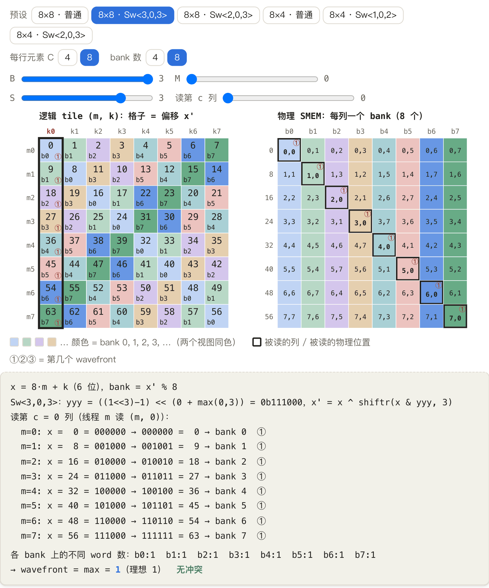
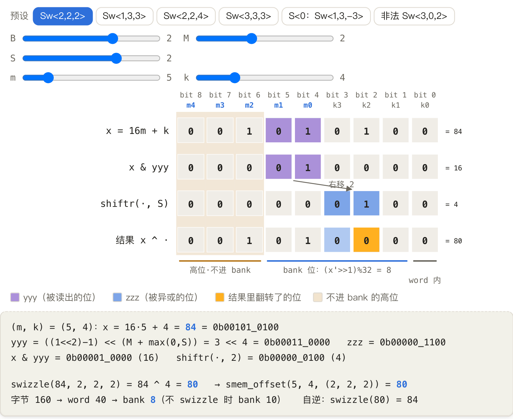
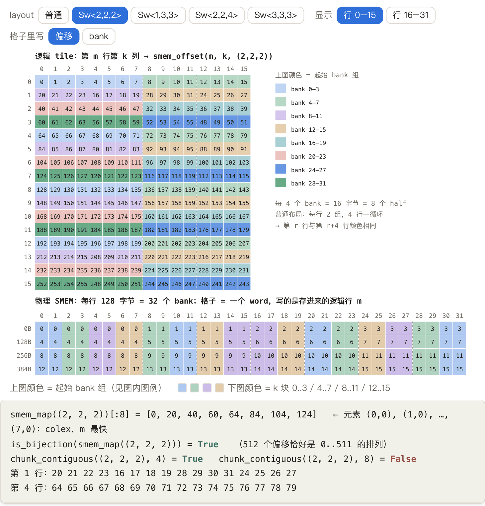
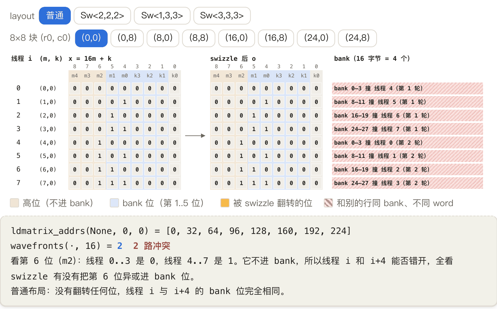
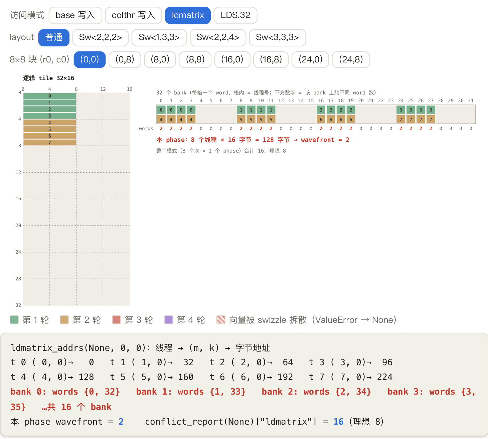
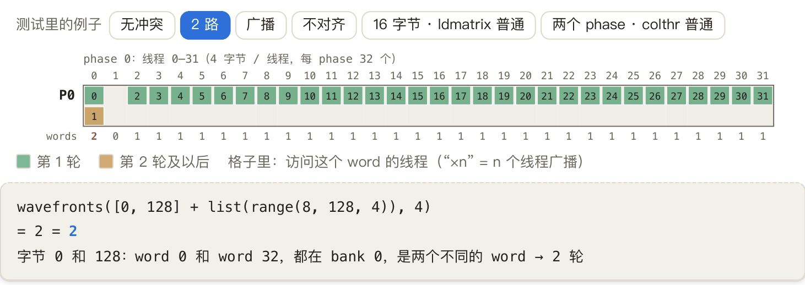
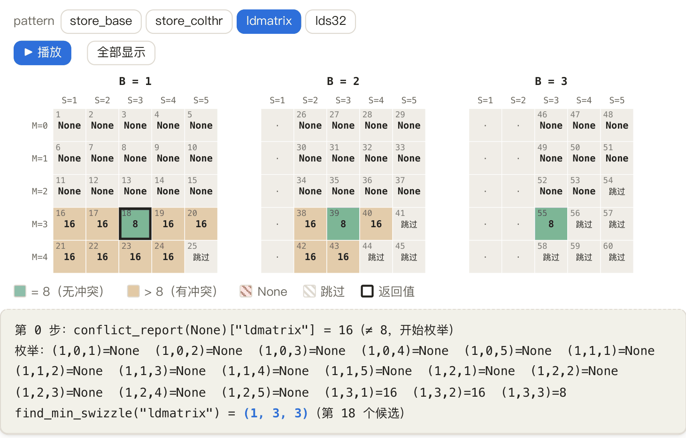

A3 · Shared memory 怎样摆：行主序、Swizzle<2,2,2> 与 bank conflict 的实测
设计 Tiled GEMM 的第三个问题：A tile 进了 shared memory 以后放在哪个地址。本题实现文档里的 Swizzle<2,2,2> ∘ (32,16):(16,1)，和真实 CuTe 逐个地址对拍；再用 bank 模型实测三种真实的访问模式。结论有点出乎意料：在这个 32 字节一行的 tile 上，Swizzle<2,2,2> 并没有消除任何冲突，真正有用的是 Swizzle<1,3,3>。
文件: mine/a3_smem_swizzle.py 你的代码 · tests/test_a3_smem_swizzle.py 测试 · solutions/a3_smem_swizzle.py 参考解
题面速览
- 背景知识：先读 从零设计 的“③ SMEM 怎么摆”。
- 在体系里的位置：真实 kernel 的 SMEM layout 是
composition(Swizzle<B,M,S>{}, layout)，例如 SM80 教程用Swizzle<3,3,3>配 8×64 的 half atom，再tile_to_shape铺满（sgemm_sm80.cu）。Swizzle的定义在 swizzle.hpp，它和 layout 的复合在 swizzle_layout.hpp。 - 你要实现：
swizzle、smem_offset、smem_map、is_bijection、chunk_contiguous、wavefronts、copy_store_addrs、ldmatrix_addrs、lds32_addrs、conflict_report、find_min_swizzle。 - 关键规则：
swizzle(x) = x ^ shiftr(x & yyy, S)，yyy = ((1<<B)−1) << (M + max(0,S))；shiftr在 S < 0 时左移；|S| < B非法。- 先算普通 layout
16·m + k，再套 swizzle：Swizzle ∘ Layout。 - bank 模型：32 个 4 字节 bank，
128 / access_bytes个线程一个 phase，同一个 word 是广播。 - 一个访问需要的 w 个元素在 swizzle 后不再按顺序连续时，这个 swizzle 对该访问非法（ValueError）。
验收要点：普通和 7 种 swizzle 的完整地址表与真实 CuTe 的 composition(Swizzle, layout) 相同 · swizzle 的单点值、负 S 与非法参数 · 自逆 · 全部是双射 · M = 2 保住 4 元素块、M = 3 保住 8 元素块 · bank 模型（无冲突、32 路、广播、不对齐报错）· 三种访问的地址 · Sw<2,2,2> 拆散 16 字节行 · 普通与 Sw<2,2,2> 的冲突报告 · Sw<1,3,3> 修好 ldmatrix 与 LDS.32 · 每种访问模式的最小 swizzle · 搜索空间太小时返回 None。
- SMEM（shared memory）：SM 上的片上存储，CTA 内共享。bank：SMEM 分成 32 个 bank，每个 bank 每周期送出一个 4 字节 word；同一 phase 里两个线程要同一 bank 的不同 word，就要排队（bank conflict）。
- wavefront：完成一次访问实际需要的轮数，无冲突时每个 phase 一轮。
- Swizzle<B,M,S>：把地址第 [M+S, M+S+B) 位异或到第 [M, M+B) 位上。M 决定“保持连续的最小块”是 2^M 个元素。
- ldmatrix：warp 级指令，8 个线程各给一行 16 字节的地址，把 8×8 的 16-bit 矩阵分发到寄存器。LDS.32：每个线程读 4 字节的 shared memory 指令。
直觉与类比
32 个 bank 像一面 32 列的储物柜，每列一次只能开一个柜门。这个 tile 每行只有 32 字节（8 个柜子），所以 4 行才排满一层；第 0 行和第 4 行正好上下叠在同一列。如果一次要取第 0..7 行同一位置的东西，第 0 行和第 4 行抢同一列，要排两次。Swizzle<2,2,2> 只在“同一层的 4 行之间”调换柜子，它们本来就不在同一列，调了也没用；Swizzle<1,3,3> 把第 4..7 行的左右两半对调（错开 4 个柜子），第 0 行和第 4 行才不再抢同一列。
图解：地址映射与三种访问
从小例子开始：先在草稿纸上手算
真实的 tile 是 32×16 个 half、32 个 bank、地址有 9 位，直接上手容易迷路。先把问题缩小到每个格子都能写出来的尺寸：8 行、8 个 bank、每个 bank 一次只送 1 个元素。在小例子里把“哪几位决定 bank、哪几位造成冲突、swizzle 拿哪几位去异或”看清楚，再回到真实尺寸，最后写成一般规则。
① 小：8×8 tile，8 个 bank
每行 8 个元素正好铺满 8 个 bank，同一列的 8 个元素全在同一个 bank。
x = 8m + k，bank = x % 8 = k
读一列：普通 8 轮，Sw<3,0,3> 1 轮
Sw<3,0,3>(x) = 8m + (k ^ m)
② 小但“行太窄”：8×4 tile，8 个 bank
每行只有 4 个元素，2 行才铺满一圈 bank，这正是真实 tile 的缩小版。
读一列：普通 4 轮
Sw<1,0,2>（用错了位）仍然 4 轮
Sw<2,0,3>（用对了位）1 轮
③ 真实：32×16 half，32 个 4 字节 bank
一行 32 字节 = 8 个 bank，4 行才铺满一圈；第 r 行和第 r+4 行撞 bank。
ldmatrix 8×8 块：普通 2 轮
Sw<2,2,2>：拆散 16 字节行 → None
Sw<1,3,3>：1 轮，向量完整
④ 一般规则
把地址写成二进制，分清三类位，swizzle 的参数就是“读”出来的。
bank 位 = 决定 bank 的位
冲突位 = phase 内在变、却不在 bank 位里的位
yyy ← 冲突位
zzz ← bank 位中 phase 内不变的位（≥ M）
M = log2(向量元素数)，S = yyy 起点 − zzz 起
点
✎ 草稿纸 1：8×8 tile，8 个 bank，1 个元素 = 1 个 word
地址 x = 8·m + k，6 位： [ m2 m1 m0 | k2 k1 k0 ]
bank = x % 8 = 低 3 位 = k → 同一列 k 的 8 个元素都在 bank k
读第 0 列（线程 m 读 (m, 0)）：x = 0, 8, 16, 24, 32, 40, 48, 56
bank 全是 0 → bank 0 上 8 个不同的 word → 8 个 wavefront（8 路冲突）
Swizzle<3,0,3>：B=3, M=0, S=3
yyy = ((1<<3)−1) << (0+3) = 0b111000 ← m 的 3 位
zzz = 0b000111 ← k 的 3 位（= bank 位）
sw(x) = x ^ ((x & 0b111000) >> 3) = 8m + (k ^ m)
逐格算一个：(m, k) = (5, 2)
x = 8·5 + 2 = 42 = 101 010
x & yyy = 101 000 → 右移 3 → 000 101
42 ^ 5 = 101 111 = 47 → bank 47 % 8 = 7 = 2 ^ 5 ✓
第 0 列换成 swizzle 后：x' = 0, 9, 18, 27, 36, 45, 54, 63
bank = 0, 1, 2, 3, 4, 5, 6, 7 → 全不同 → 1 个 wavefront
每一行仍然是 8 个不同的 bank（k ^ m 对固定的 m 是 k 的一个排列）→ 读一行也是 1 轮
✎ 草稿纸 2：8×4 tile，8 个 bank —— 行比一圈 bank 窄
地址 x = 4·m + k，5 位： [ m2 m1 | m0 k1 k0 ]
bank = x % 8 = 低 3 位 = (m0, k1, k0) ← m0 已经是 bank 位；m1、m2 不是
读第 0 列：x = 0, 4, 8, 12, 16, 20, 24, 28
bank = 0, 4, 0, 4, 0, 4, 0, 4 → bank 0 上有 4 个 word → 4 个 wavefront
冲突的行 0, 2, 4, 6 只在 m1、m2（地址第 3、4 位）上不同 —— 这两位就是“冲突位”
错误的 swizzle：Sw<1,0,2>，yyy = 第 2 位（m0）→ 异或到第 0 位
x' = 0, 5, 8, 13, 16, 21, 24, 29 bank = 0, 5, 0, 5, 0, 5, 0, 5 → 还是 4 轮
m0 本来就在 bank 位里，用它去打乱，冲突的行（m0 相同）被换成同样的样子
正确的 swizzle：Sw<2,0,3>，yyy = 第 3、4 位（m1 m2）→ 异或到第 0、1 位（k1 k0）
x' = 0, 4, 9, 13, 18, 22, 27, 31 bank = 0, 4, 1, 5, 2, 6, 3, 7 → 1 轮 ✓
✎ 草稿纸 3：放大到真实尺寸，32×16 half，ldmatrix 读 8×8 块 (r0, c0) = (0, 0)
half 偏移 x = 16·m + k，9 位： [ m4 m3 m2 m1 m0 | k3 k2 k1 k0 ]
字节 = 2x，word = x >> 1，bank = word % 32 = x 的第 1..5 位 ← 第 0 位：word 内的哪一半
第 6..8 位（m2 m3 m4）不进 bank
ldmatrix：线程 i 给第 i 行 16 字节（8 个 half）的地址，8 个线程一个 phase
行 r 的起点 x = 16r： r = 0 1 2 3 4 5 6 7
起始 bank = 8r % 32： 0 8 16 24 0 8 16 24 每行占 4 个 bank
第 0 行和第 4 行：x = 0 和 64，只差第 6 位（m2）→ 同 bank、不同 word → 2 个 wavefront
Sw<2,2,2>：yyy = 0b11 << 4 = 第 4、5 位（m1 m0）→ 异或到第 2、3 位（k3 k2）
(1, 0)：x = 16 = 0 0001 0000，x & yyy = 16，>> 2 = 4，16 ^ 4 = 20 ← 真实 CuTe 的 sA(1,0) = 20
(5, 4)：x = 84 = 0 0101 0100，x & yyy = 16，>> 2 = 4，84 ^ 4 = 80 ← 真实 CuTe 的 sA(5,4) = 80
第 6 位没被碰 → 第 0、4 行的 bank 位照旧相同 → 2 路冲突不变
而且 M = 2 只保住 4 个 half：第 1 行 k = 0..7 → 20 21 22 23 16 17 18 19，16 字节行被拆开 → ValueError
Sw<1,3,3>：yyy = 1 << 6 = 第 6 位（m2）→ 异或到第 3 位（k3）
(4, 0)：x = 64，x & yyy = 64，>> 3 = 8，64 ^ 8 = 72 → 字节 144 → word 36 → bank 4
起始 bank：r = 0..3 → 0 8 16 24；r = 4..7 → 4 12 20 28 → 32 个 bank 各用一次 → 1 个 wavefront ✓
M = 3：低 3 位不动 → 每 8 个 half 仍然连续，ldmatrix 合法
ldmatrix_addrs((1,3,3), 0, 0) = [0, 32, 64, 96, 144, 176, 208, 240]
下面是小例子的“草稿纸生成器”。左边是逻辑 tile（格子里写偏移，颜色 = bank），右边是物理 SMEM（每列一个 bank，格子里写这个位置存的是哪个逻辑元素）。选中的一列由 8 个线程同时读，圈出的数字是它在第几轮被服务。先点三个预设对照上面两张草稿纸，再自己拖 B、M、S 看看哪些组合能把轮数降到 1。

- 先写出地址的二进制，标出 bank 位（小例子：低 3 位；真实 tile：half 偏移的第 1..5 位）。2. 看一次访问（一个 phase）里各线程的地址在哪些位上不同。不同之处都落在 bank 位里，就没有冲突；有不同之
处落在 bank 位之外（冲突位），就可能同 bank、不同 word。
- swizzle 要把冲突位（yyy）异或进 bank 位里这次访问中不变的那几位（zzz）。拿本来就在 bank 位里的位去打乱
（小例子的 Sw<1,0,2>、真实 tile 的 Sw<2,2,2>）没有用。
- zzz 的最低位 M 不能低于向量粒度：一次读 2^M 个元素，低 M 位就必须原样保留。
图解详解：位运算、bank 与三种访问
这些图是交互版讲解页的静态快照，显示的是默认参数下的状态。文中提到的按钮、滑块和悬停提示在这里不能操作；图上的数字和下方的文字、表格、黑底面板说的是同一组值，可以直接对照你的函数输出。
这一节把要实现的函数逐个画出来。整道题的数据流就是下面这几行：每一步都对应一张图。
o = smem_offset(m, k, sw) # 图 1、图 2：16m+k，再 swizzle（只改地址的位）
a = 2 * o # 字节地址；向量的 w 个 half 必须在 o..o+w-1（否则 Val
addrs = ldmatrix_addrs(sw, r0, c0) # 图 3、图 4：三种访问模式各给一组字节地址
n = wavefronts(addrs, 16) # 图 4、图 5：按 128/access_bytes 个线程一个 phase，
rep = conflict_report(sw) # 图 4：把每种模式的所有 phase 加起来（理想 8）
best = find_min_swizzle("ldmatrix") # 图 6：按 B、M、S 从小到大找第一个等于 8 的
图 1 · swizzle 的位运算：yyy 右移 S 位，异或到 zzz
9 个方格是 half 偏移 x = 16m + k 的 9 个位（左边是高位）。紫色是 yyy 掩码选出的位，蓝色是它们右移 S 位后落到的 zzz ，黄色是结果里真正被翻转的位。下面的括号标出 bank 位（第 1..5 位）：swizzle 有没有用，就看 zzz 是否落在 bank 位里、yyy 是否就是冲突位。试着把 S 调成负数（左移）或让 |S| < B（非法）。

(x) = x ^ shiftr(x & yyy, S)" loading="lazy" style="width:100%;aspect-ratio:1461/1195">源码对照：CuTe 自己的位图注释和 yyy_msk 、zzz_msk 、apply 见 swizzle.hpp ；shiftr 在 S < 0 时左移，见 math.hpp 的 shiftr 。CuTe 文档对 swizzle 三个参数的说明：cute_types · Swizzle 。
图 2 · smem_offset / smem_map ：逻辑 tile 与物理 bank
上面是逻辑 tile（第 m 行、第 k 列的 half 放在哪个偏移），颜色表示它落在哪 4 个 bank（一个 16 字节块）。下面是物理 SMEM：每 128 字节一行、32 个 bank 一列，每个格子是一个 4 字节 word，写的是存进来的那个元素的逻辑行号 m，颜色是它的 4 元素块号 k // 4 。对比普通布局和 Sw<1,3,3>：普通布局里 bank 0..3 这一列从上到下存的是第 0、4、8、12 行的 k = 0..7（同一列 = 同一组 bank，第 0、4 行撞上）；Sw<1,3,3> 把第 4..7 行的左右两半对调，第 4 行的 k = 0..7 挪到了 bank 4..7。

图 3 · 为什么 Sw<2,2,2> 没用：ldmatrix 8 行的地址位
ldmatrix 的一个 phase 是 8 个线程，各读一行 16 字节。把这 8 行的偏移写成二进制排成一张表，左边是 swizzle 前、右边是 swizzle 后。看高位（第 6..8 位，黄底）：第 0 行和第 4 行只在第 6 位上不同，而第 6 位不进 bank，所以它们的 bank 位完全一样。Sw<2,2,2> 翻转的是第 2、3 位（由第 4、5 位决定），第 0 行和第 4 行的第 4、5 位相同，翻转也相同，冲突原样保留；Sw<1,3,3> 用第 6 位去翻转第 3 位，正好把它们拆开。按“普通 → Sw<2,2,2> → Sw<1,3,3>”的顺序点一遍：Sw<2,2,2>下第 0、4 行的 bank 照旧相同，而且奇数行的 16 字节被拆成两段，ldmatrix 直接非法。

图 4 · 三种访问模式与 wavefronts ：每个 phase 的 bank 占用
左边是逻辑 tile，画出当前这个 phase 里每个线程读写的向量（格子里写线程号）；右边是 32 个 bank，每个方块是一个被访问的 4 字节 word，同一列叠了几层就要几个 wavefront。颜色表示“第几轮被服务”：绿色第 1 轮，橙色第 2 轮，红色第 3 轮，紫色第 4 轮。四种模式的线程分组不同：
- base 写入（8 字节）：16 个线程一个 phase，覆盖 4 整行 = 128 字节 → 永远 1 轮。
- colthr 写入（8 字节）：16 个线程沿 m 走，同一列的 16 行 → 普通布局 4 轮。
- ldmatrix（16 字节）：8 个线程一个 phase；LDS.32（4 字节）：32 个 lane 一个 phase，lane l 读第 l//4 行。

图 5 · wavefronts 的四个边界：无冲突、2 路、广播、不对齐
测试 test_wavefront_model 用手写的地址检查 bank 模型本身。注意两点：同一个 word 被多个线程读只算一次（广播）；一个 16 字节的访问占 4 个 word、4 个 bank。线程数超过 128 / access_bytes 时分成多个 phase，wavefront 相加。

图 6 · find_min_swizzle ：按 B、M、S 从小到大搜索
三张小表分别是 B = 1、2、3；每张表的行是 M = 0..4，列是 S = 1..5。格子里是 conflict_report(sw)[pattern] ：绿色等于理想值 8，红色斜线是 None（向量被拆散），灰色斜线是被跳过的候选（M + S + B > 9，超出 512 元素的定义域），“·”是 S< B 不枚举。点“▶ 播放”按搜索顺序走一遍，第一个绿色格子就是返回值。

Hopper 的 GMMA 为 K-major 的 SMEM 提供了几种现成的 swizzle atom：一行 32 字节的Layout_K_SW32_Atom_Bits 用 Swizzle<1,4,3> ，一行 128 字节的 Layout_K_SW128_Atom_Bits 用 Swizzle<3,4,3> （mma_traits_sm90_gmma.hpp ）。带 smem_ptr_flag 的 swizzle 作用在字节地址上
（pointer_swizzle.hpp ）。half 是 2 字节，字节地址 = 2 × half 偏移，所有位左移 1 位，所以字节上的Swizzle<1,4,3> 等于 half 偏移上的 Swizzle<1,3,3> ：本题搜出来的答案正是 32 字节一行时的标准选择。
同理，Swizzle<3,4,3> （字节）= Swizzle<3,3,3> （half），就是 SM80 教程给 8×64 half atom 用的那个（sgemm_sm80.cu ）。
速查：位、bank 与参数
| 量 | 公式（half 偏移 x，字节 = 2x） | 本题 |
|---|---|---|
| 普通偏移 | x = 16·m + k |
m = 第 4..8 位，k = 第 0..3 位 |
| swizzle | yyy = ((1<<B)−1) << (M + max(0,S)) ，x ^ shiftr(x & yyy, S) |
|S| < B → ValueError |
| bank | word = byte // 4 ，bank = word % 32 |
= x 的第 1..5 位；第 6..8 位不进 bank |
| phase | 128 // access_bytes 个线程 |
8 B → 16，16 B → 8，4 B → 32 |
| wavefront | 每个 phase：max over bank（不同 word 数）；所有 phase 相加 | 同一个 word = 广播，只算 1 |
| 向量合法 | w 个 half 在 swizzle 后仍是 o, o+1, …, o+w−1 | 需要 2^M ≥ w：ldmatrix M ≥ 3，拷贝 M ≥ 2 |
| 冲突来源 | phase 内变化、但不在 bank 位里的位 | ldmatrix / LDS.32：第 6 位；colthr：第 6、7 位 |
| 修法 | yyy = 冲突位，zzz = bank 位里 phase 内不变的位（≥ M） | ldmatrix (1,3,3)，colthr (2,2,4) |
| conflict_report | store_base | store_colthr |
| None（普通） | 8 | 32 |
| (2, 2, 2) | 8 | 32 |
| (1, 3, 3) | 8 | 16 |
| (2, 2, 4) | 8 | 8 |
| (3, 3, 3) | 8 | 16 |
| find_min_swizzle | (0, 0, 0) | (2, 2, 4) |
逐步演示
每行 32 字节，第 r 行和第 r + 4 行相差 128 字节，落在同一组 bank。ldmatrix 读一个 8×8 块的 8 行：2 个 wavefront；MMA A 操作数的 LDS.32（lane l 读第 l//4 行）同样 2 个。A2 的 base 拷贝写入每个 phase 覆盖 4 整行 = 128 字节，没有冲突。
yyy 是地址第 4、5 位（行号的低两位），异或到第 2、3 位（4 元素块号）。第 1 行的 4 个块变成 20..23, 16..19, 28..31, 24..27（真实 CuTe 的 sA(1,0) = 20）。但第 0..3 行本来就在不同 bank，第 r 和 r + 4 行的行号低两位相同、换法也相同，所以 2 路冲突原样保留；而且 M = 2 只保住 4 元素（8 字节）块，ldmatrix 需要的 16 字节行被拆开了，ldmatrix_addrs 直接报错。
yyy 是地址第 6 位（第 4..7 行），异或到第 3 位：第 4..7 行整体右移 8 个元素（16 字节）。真实 CuTe 的第 0 列：0 16 32 48 72 88 104 120。ldmatrix、LDS.32 都变成 1 个 wavefront；M = 3 保住 16 字节行。find_min_swizzle("ldmatrix") == (1, 3, 3)。
如果拷贝改用 A2 的 colthr（lane 沿 M 走），每个 phase 的 16 个线程写同一列的 16 行：普通布局每个 phase 要 4 个 wavefront（总数 32），Sw<2,2,4> 把它降到理想的 8。但在本题的搜索范围里，没有一个 swizzle 能同时让 colthr 写入、ldmatrix 和 LDS.32 三者都无冲突：swizzle 要和整条数据路径一起选。
四种 layout 的冲突报告（wavefront 总数，理想值都是 8；None 表示这个 swizzle 拆散了该访问需要的向量）：
| layout | base 写入 | colthr 写入 | ldmatrix | LDS.32 |
|---|---|---|---|---|
| 普通行主序 | 8 | 32 | 16 | 16 |
| Sw<2,2,2>（文档） | 8 | 32 | None | 16 |
| Sw<1,3,3> | 8 | 16 | 8 | 8 |
| Sw<2,2,4> | 8 | 8 | None | 16 |
易错点
- swizzle 放在 layout 前面。 顺序是
swizzle(16·m + k)，先 layout 后 swizzle。test_swizzled_map_matches_cute_composition逐个地址和真实 CuTe 比较。 - 以为 swizzle 改变了元素。 它只改地址；
test_every_swizzle_is_a_bijection确认每个地址恰好用一次。 - 忽略向量粒度。 M = 2 只保证 4 个元素连续；16 字节的 ldmatrix 行需要 M ≥ 3。测试
test_breaking_a_vector_raises、test_chunk_contiguity_depends_on_M。 - 把 128 字节当成一行。 这个 tile 一行只有 32 字节，冲突发生在相隔 4 行的地方，不是相隔 1 行。测试
test_conflict_report_plain。 - 广播算成冲突。 同一个 word 被多个线程读只算一次。测试
test_wavefront_model_basics。
对照文档
“为什么不直接按普通二维数组摆放？因为 Shared Memory 被划分成 banks；若同一条 warp 指令中的多个 lane 访问发生 bank conflict，访问可能被拆成多个阶段。通过合适的布局或 swizzle，可以改善 bank 访问模式，也能配合后续的矩阵读取路径。SmemLayout = Swizzle ∘ ordinary_layout。示例使用的形式为 Swizzle<2,2,2> ∘ Layout((32,16):(16,1))……Swizzle 改变物理地址排列，不改变矩阵元素在数学上的坐标身份。”
文档说“合适的” swizzle 可以改善访问；本题把“合适”量化了：Swizzle<2,2,2> 在这个 tile 上是一个合法的双射，但对三种真实访问都没有改善，ldmatrix 路径需要 Swizzle<1,3,3>。swizzle 的参数必须由“行有多宽、访问有多宽、哪些行会撞 bank”推出来，而不是照抄。
上机验证
playground/run.sh playground/a3_smem_swizzle.cpp # 真实 CuTe 的 composition(Swizzle, layout)
./check.sh oracle a3 # 重新生成 tests/golden/a3_smem_swizzle.json
本机的真实输出（节选）：
Sw<2,2,2> = Sw<2,2,2> o _0 o (_32,_16):(_16,_1)
row 0: 0 1 2 3 4 5 6 7 8 9 10 11 12 13 14 15
row 1: 20 21 22 23 16 17 18 19 28 29 30 31 24 25 26 27
row 2: 40 41 42 43 44 45 46 47 32 33 34 35 36 37 38 39
row 3: 60 61 62 63 56 57 58 59 52 53 54 55 48 49 50 51
bijection: yes
第 4 行和第 0 行的排列完全一样（行号低两位都是 0）：这就是 Sw<2,2,2> 拆不开第 0、4 行冲突的原因。
三级提示
L1I/O 例子和关键问题方向（轻度剧透）
smem_offset(1, 0, (2, 2, 2)) # 20
smem_offset(5, 4, (2, 2, 2)) # 80
wavefronts(ldmatrix_addrs(None, 0, 0), 16) # 2
conflict_report((1, 3, 3)) # {'store_base': 8, 'store_colthr': 16, 'ldmatrix': 8, 'lds32': 8}
find_min_swizzle("store_colthr") # (2, 2, 4)
关键问题
- 这个 tile 一行 32 字节。哪两行会落在同一组 bank？
Swizzle<2,2,2>用行号的哪几位去打乱地址？这几位对应的行本来是否冲突？- 为什么 M 决定了“一个向量访问能不能被保住”？
L2思路拆解与常见坑拆解与常见坑（中度剧透）
swizzle：先校验参数，算yyy，x ^ ((x & yyy) >> S)（S < 0 时左移）。wavefronts：按128 // access_bytes个地址一组；每个地址覆盖access_bytes // 4个 word；每个 bank 收集不同 word 的集合，取最大集合大小，累加。- 三个地址函数都先检查需要的 w 个元素在 swizzle 后仍然连续，再返回
2 × 首元素偏移。 conflict_report：每个模式包一层 try/except，非法时记 None。find_min_swizzle：按 B、M、S 三层循环，跳过M + S + B > 9的候选。
L3关键问题的答案几乎是答案（重度剧透）
答案
- 第 r 行和第 r + 4 行：相差 4 × 32 = 128 字节，正好绕 32 个 bank 一圈。
- 用地址第 4、5 位，也就是行号的低两位（第 0..3 行之间的区别）。这 4 行在 bank 上本来就错开了 0、8、16、24 个 word，不冲突；冲突发生在行号的第 2 位（地址第 6 位，相隔 4 行），
Sw<2,2,2>没有碰它。 - swizzle 只改第 M 位及以上的位，低 M 位不动，所以每 2^M 个连续元素在 swizzle 后仍然连续、顺序不变。ldmatrix 一行 8 个 half 需要 2^M ≥ 8，即 M ≥ 3。
参考解
✓solutions/a3_smem_swizzle.py先自己写完、跑过测试再看
"""A3 · Shared memory 怎样摆：行主序、Swizzle 与 bank conflict — reference solution.
从零设计 Tiled GEMM 的第三个问题：**A tile 搬进 shared memory（SMEM）以后，每个元素放在哪个地址？**
文档的运行例子用 SmemLayout = Swizzle<2,2,2> ∘ (32,16):(16,1)：先有普通的行主序地址映射，再复合一个只改
地址、不改元素身份的位运算。本题从零实现这个映射，再用一个 bank 模型实测：对三种真实的访问模式
（A2 的 8 字节拷贝写入、ldmatrix 式的 16 字节行读、MMA A 操作数的 4 字节读），哪种 swizzle 能消除冲突。
期望的地址表来自 oracle/a3_smem_swizzle.cpp：真实 CuTe 的 composition(Swizzle<B,M,S>{},layout)。
地址映射（单位：half 元素）
- plain：(m, k) → 16·m + k（32 行 × 16 列，每行 32 字节）。
- swizzle(x, B, M, S)（CuTe 的 Swizzle<B,M,S>）：B ≥ 0、M ≥ 0、|S| ≥ B，否则 ValueError。
yyy = ((1<<B)-1) << (M + max(0, S))， swizzle(x) = x ^ shiftr(x & yyy, S)
shiftr(v, s) 在 s ≥ 0 时右移 s 位，s < 0 时左移 −s 位。
- smem_offset(m, k, sw=None)：sw 为 None 时是 plain，否则 swizzle(plain(m, k), *sw)。
- smem_map(sw=None)：长度 512 的列表，第 i 项是 tile 元素 (i % 32, i // 32) 的偏移（colex，与 oracle 一致）。
- is_bijection(values)：values 恰好是 0..len−1 的排列。
- chunk_contiguous(sw, w)：每一行里每个对齐的 w 元素组 k ∈ [j·w, (j+1)·w)，偏移按顺序连续递增。
bank 模型（简化模型）
- 32 个 bank，每个 4 字节：word = byte // 4，bank = word % 32。
- 每个线程访问 access_bytes ∈ {4, 8, 16} 字节，地址必须按 access_bytes 对齐（否则 ValueError）；
线程按顺序每 128 // access_bytes 个分成一个 phase。phase 的 wavefront 数 = 各 bank 上“不同 word 的个数”的最大值
（同一个 word 多个线程读是广播）。wavefronts(addrs, access_bytes) 返回所有 phase 的 wavefront 之和。
三种访问模式（地址都是字节，元素 2 字节）。所需的 w 个元素在 sw 下不连续时抛 ValueError（这个 swizzle 会拆散向量）。
- copy_store_addrs(sw, order="base")：A2 的拷贝写入，128 个线程各写 4 个 half（8 字节）。
order="base"：线程 t 写 (t // 4, 4·(t % 4))；order="colthr"：线程 t 写 (t % 32,4·(t // 32))。
- ldmatrix_addrs(sw, r0, c0)：一个 8×8 矩阵，线程 i（0..7）给出 (r0 + i, c0) 起的 16 字节行地址。
- lds32_addrs(sw, r0=0, k0=0)：MMA A 操作数的 4 字节读，lane l（0..31）读 (r0 + l // 4,k0 + 2·(l % 4)) 起的 2 个 half。
- conflict_report(sw) -> dict（每项是 wavefront 总数，括号里是无冲突时的值）：
"store_base" = 4 个 warp 的 copy_store_addrs(sw, "base") 之和（理想 8）
"store_colthr" = 同上，order="colthr"（理想 8）
"ldmatrix" = 8×8 块 (r0, c0) ∈ {0, 8, 16, 24} × {0, 8} 之和（理想 8）
"lds32" = (r0, k0) ∈ {0, 8, 16, 24} × {0, 8} 之和（理想 8）
某个模式在 sw 下非法（ValueError）时该项为 None。
- find_min_swizzle(pattern, max_B=3, max_M=4, max_S=5)：按 B、M、S 从小到大（S 从 max(B,1) 到 max_S）枚举，跳过
M + max(0,S) + B > 9（超出 512 元素的定义域）和使该模式非法的候选，返回第一个让 conflict_report[pattern]
等于理想值 8 的 (B, M, S)；B = 0 视为不 swizzle，返回 (0, 0, 0)。都不行返回 None。
API
is_tuple, flatten, fmt_tuple, fmt_layout, parse_tuple, parse_layout given（tools/cute_given.py）
swizzle(x, B, M, S) -> int
smem_offset(m, k, sw=None) -> int
smem_map(sw=None) -> list[int]
is_bijection(values) -> bool
chunk_contiguous(sw, w) -> bool
wavefronts(byte_addrs, access_bytes) -> int
copy_store_addrs(sw, order="base") -> list[int]
ldmatrix_addrs(sw, r0, c0) -> list[int]
lds32_addrs(sw, r0=0, k0=0) -> list[int]
conflict_report(sw) -> dict
find_min_swizzle(pattern, max_B=3, max_M=4, max_S=5) -> tuple | None
"""
from __future__ import annotations
def is_tuple(x) -> bool:
return isinstance(x, tuple)
def flatten(t) -> tuple:
"""(2, (3, 4)) -> (2, 3, 4); 5 -> (5,)."""
if not is_tuple(t):
return (t,)
out = ()
for e in t:
out += flatten(e)
return out
def fmt_tuple(t, static: bool = True) -> str:
"""Format an IntTuple the way cute::print does: (_2,(_3,_4)) for static ints."""
if is_tuple(t):
return "(" + ",".join(fmt_tuple(e, static) for e in t) + ")"
return ("_" if static else "") + str(t)
def fmt_layout(shape, stride, static: bool = True) -> str:
"""cute::print of a Layout: "<shape>:<stride>"."""
return fmt_tuple(shape, static) + ":" + fmt_tuple(stride, static)
def parse_tuple(s: str):
"""Inverse of fmt_tuple. Accepts '_4' or '4'. '(_2,(_3,_4))' -> (2, (3, 4))."""
s = s.strip()
pos = 0
def parse():
nonlocal pos
if s[pos] == "(":
pos += 1
items = []
while s[pos] != ")":
items.append(parse())
if s[pos] == ",":
pos += 1
pos += 1
return tuple(items)
start = pos
while pos < len(s) and s[pos] not in ",)":
pos += 1
tok = s[start:pos].lstrip("_")
return int(tok)
v = parse()
if pos != len(s):
raise ValueError(f"trailing characters in {s!r}")
return v
def parse_layout(s: str):
"""'(_4,_8):(_8,_1)' -> ((4, 8), (8, 1)). A swizzled/composed layout is not accepted."""
shape_s, stride_s = _split_top_colon(s.strip())
return parse_tuple(shape_s), parse_tuple(stride_s)
def _split_top_colon(s: str):
depth = 0
for i, ch in enumerate(s):
if ch == "(":
depth += 1
elif ch == ")":
depth -= 1
elif ch == ":" and depth == 0:
return s[:i], s[i + 1:]
raise ValueError(f"no top-level ':' in {s!r}")
# ---- A3: your code ----
def swizzle(x: int, B: int, M: int, S: int) -> int:
"""CuTe 的 Swizzle<B,M,S>：把 yyy 位右移 S 位后异或到 zzz 位上。"""
if B < 0 or M < 0 or abs(S) < B:
raise ValueError("Swizzle needs B >= 0, M >= 0, |S| >= B")
yyy = ((1 << B) - 1) << (M + max(0, S))
moved = x & yyy
# 只做位运算：同一个地址永远映射到同一个新地址，而且它是自己的逆（异或两次复原）。
return x ^ (moved >> S if S >= 0 else moved << -S)
def smem_offset(m: int, k: int, sw=None) -> int:
"""逻辑坐标 (m, k) 在 SMEM 里的元素偏移。"""
plain = 16 * m + k
# 先算普通 layout，再套 swizzle：Swizzle ∘ Layout（CuTe ComposedLayout 的求值顺序）。
return plain if sw is None else swizzle(plain, *sw)
def smem_map(sw=None) -> list:
"""colex 顺序（m 最快）的 512 个偏移。"""
return [smem_offset(i % 32, i // 32, sw) for i in range(512)]
def is_bijection(values) -> bool:
"""values 是否恰好是 0..len-1 的一个排列。"""
return sorted(values) == list(range(len(values)))
def chunk_contiguous(sw, w: int) -> bool:
"""每行里每个对齐的 w 元素组在 SMEM 里是否仍按顺序连续。"""
for m in range(32):
for j in range(16 // w):
offs = [smem_offset(m, j * w + i, sw) for i in range(w)]
if any(offs[i + 1] - offs[i] != 1 for i in range(w - 1)):
return False
return True
def wavefronts(byte_addrs, access_bytes: int) -> int:
"""所有 phase 的 wavefront 数之和。"""
if access_bytes not in (4, 8, 16):
raise ValueError("access_bytes must be 4, 8 or 16")
if any(a % access_bytes for a in byte_addrs):
raise ValueError("misaligned access")
per_phase = 128 // access_bytes
total = 0
for p in range(0, len(byte_addrs), per_phase):
banks = {}
for a in byte_addrs[p:p + per_phase]:
for wd in range(a // 4, (a + access_bytes) // 4):
banks.setdefault(wd % 32, set()).add(wd)
# 一个 bank 上有几个不同的 word，就要分几轮；广播（同一个 word）不额外计数。
total += max(len(s) for s in banks.values())
return total
def _vector(sw, m: int, k: int, w: int) -> int:
offs = [smem_offset(m, k + i, sw) for i in range(w)]
if any(offs[i + 1] - offs[i] != 1 for i in range(w - 1)):
raise ValueError("this swizzle breaks a %d-element vector" % w)
return 2 * offs[0]
def copy_store_addrs(sw, order: str = "base") -> list:
"""A2 拷贝的 128 个 8 字节写入地址。"""
out = []
for t in range(128):
m, k = (t // 4, 4 * (t % 4)) if order == "base" else (t % 32, 4 * (t // 32))
out.append(_vector(sw, m, k, 4))
return out
def ldmatrix_addrs(sw, r0: int, c0: int) -> list:
"""8×8 矩阵的 8 个 16 字节行地址。"""
return [_vector(sw, r0 + i, c0, 8) for i in range(8)]
def lds32_addrs(sw, r0: int = 0, k0: int = 0) -> list:
"""MMA A 操作数 32 个 lane 的 4 字节读地址。"""
return [_vector(sw, r0 + l // 4, k0 + 2 * (l % 4), 2) for l in range(32)]
def _safe(fn):
try:
return fn()
except ValueError:
return None
def conflict_report(sw) -> dict:
"""四种访问模式的 wavefront 总数（非法为 None）。"""
def stores(order):
a = copy_store_addrs(sw, order)
return sum(wavefronts(a[w:w + 32], 8) for w in range(0, 128, 32))
blocks = [(r, c) for r in (0, 8, 16, 24) for c in (0, 8)]
return {
"store_base": _safe(lambda: stores("base")),
"store_colthr": _safe(lambda: stores("colthr")),
"ldmatrix": _safe(lambda: sum(wavefronts(ldmatrix_addrs(sw, r, c), 16) for r, c in blocks)),
"lds32": _safe(lambda: sum(wavefronts(lds32_addrs(sw, r, c), 4) for r, c in blocks)),
}
def find_min_swizzle(pattern: str, max_B: int = 3, max_M: int = 4, max_S: int = 5):
"""第一个让该访问模式无冲突的 (B, M, S)。"""
if conflict_report(None)[pattern] == 8:
return (0, 0, 0)
for B in range(1, max_B + 1):
for M in range(0, max_M + 1):
for S in range(max(B, 1), max_S + 1):
if M + max(0, S) + B > 9:
continue
if conflict_report((B, M, S))[pattern] == 8:
return (B, M, S)
return None面试官追问 & 对照源码
- SM80 教程用
Swizzle<3,3,3>配 8×64 的 half（每行 128 字节）：按本题的方法推一推，为什么那里是 B = 3、S = 3（sgemm_sm80.cu）？ - 如果把 BK 从 16 改成 64（一行 128 字节），
Swizzle<2,2,2>会不会变得有用？ - 本题的冲突报告里没有一个 swizzle 能同时让 colthr 写入和 ldmatrix 读都无冲突。真实 kernel 怎么处理“写入和读出偏好不同”的情况？（提示：换拷贝方式，或用 TMA 让硬件按 swizzle 写入，见 Track D。）
Swizzle是一个自逆的双射。这对“写进去再读出来”有什么好处？